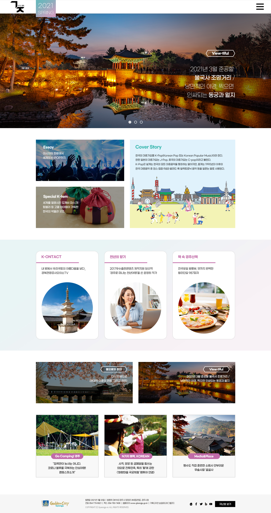
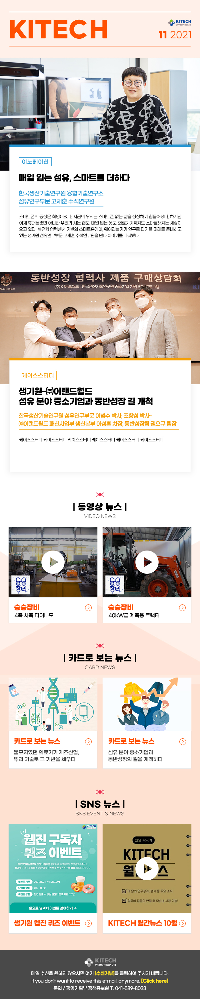
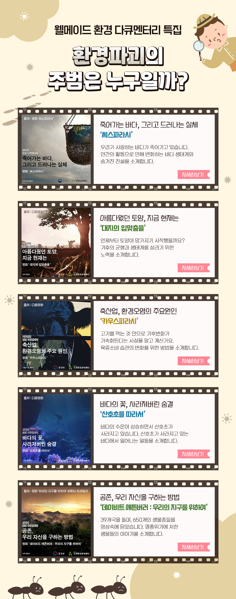
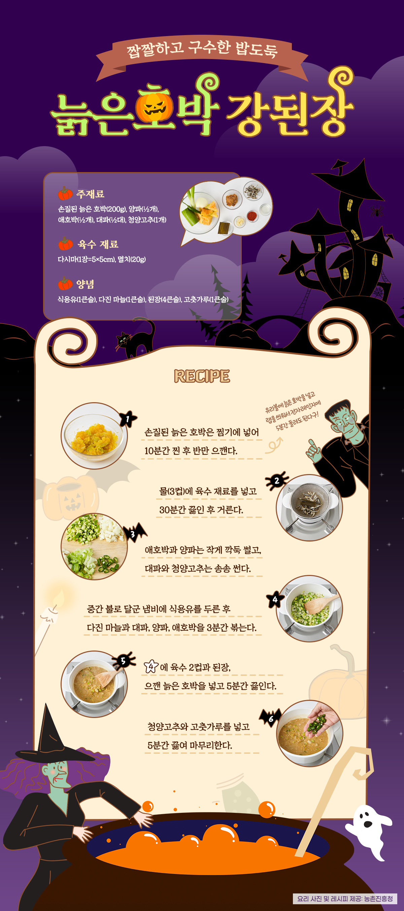

SMG
SMG Corp is a digital agency creating web-based editorial and event experiences. As a Web Designer, I designed, developed, and shipped responsive web magazines and event pages across mobile, tablet, and desktop. I turned high-fidelity designs into interactive, production-ready web experiences using HTML, CSS, and JavaScript.



